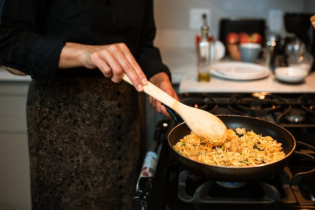

Pirinç Pilavı Tarifi
Tane tane dökülen pirinç pilavı yapmak çoğu kişinin gönlünden geçer ama sonuç bazen hüsran olabiliyor. Çok az yapım aşaması olmasına ve kısacık sürede hazırlanabilmesine rağmen pilav yapmak deneyim gerektiren bir işlem. Ben size bu tarifim ile pilav yapmanın tüm detaylarını ve püf noktaları yazmaya çalıştım. Videolu olarak da tarifimi detaylandırdım. ? Umarım tarifimi denedikten sonra pilav yapmak sizler için de bir keyfe dönüşür.Gelelim tane tane pirinç pilavı nasıl yapılır? sorusunun yanıtına.

Pirinç Pilavı Tarifi İçin Malzemeler
- 2 su bardağı pirinç
- 2,5 su bardağı sıcak su
- 3 yemek kaşığı tereyağı
- 1 yemek kaşığı sıvı yağ
- tuz
Pirinç Pilavı Tarifi Nasıl Yapılır?
- Pirinci bol su ile yıkayın. Uygun bir kaba alarak üzerini geçecek kadar ılık su ekleyin. Birazda tuz ilave edip karıştırın ve 15-20 dakika bekletin. Daha sonra yıkayarak suyunu süzün. Nişastası gidene kadar yıkıyoruz. Çıkan suyun berrak olması gerekiyor.
- Tencerede tereyağını eritip suyu süzülmüş pirinci ekleyin ve 4-5 dakika kadar kavurun. Pirinçlerin yeteri kadar kavrulduğunu pirinler tane tane dökülmeye başladığında anlayabilirsiniz.
- Pirinçler kavrulduktan sonra sıcak su veya sıcak et suyunu ekleyelim. İsterseniz yarım tavuk suyu yarım sıcak su kullanabilirsiniz. Tavuk suyunuz yağlı ise bu şekilde su ile karıştırmanızı tavsiye ederim ancak yağlı değilse tamamı tavuk suyu ile çok daha lezzetli olacaktır. Son olarak tuzu ekleyin.
- Pilavımızı kapağı kapalı bir şekilde önce yüksek ateşte pişmeye bırakalım.
- Üzeri göz göz olduğunda yani üzerindeki suyu çekip pilavın üzerinde nokta nokta delikler oluştuğunda kısık ateşe alalım. Pirinçler yumuşayıp suyu tamamen çekene kadar pişirelim.
- Pişen pilavımızı ocaktan aldıktan sonra üzerine havlu peçete sererek kapağını tekrar kapatalım.
- Pilavı 10-15 dk. dinlendirelim. Daha sonra tahta kaşık ile karıştırarak servis yapabilirsiniz.
Pirinç Pilavı Besin Değeri Nedir?
1 porsiyon pilav (100g) 130 kalori dir.
- Toplam yağ 0,3 g
- Kolesterol 0 mg
- Sodyum 1 mg
- Potasyum 35 mg
- Karbonhidrat 28 g
- Diyet Lifi 0,4 g
- Şeker 0,1 g
- Protein 2,7 g
Afiyet Olsun :)